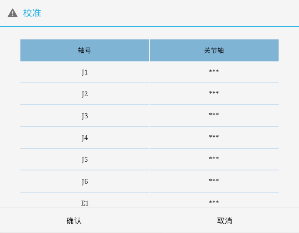
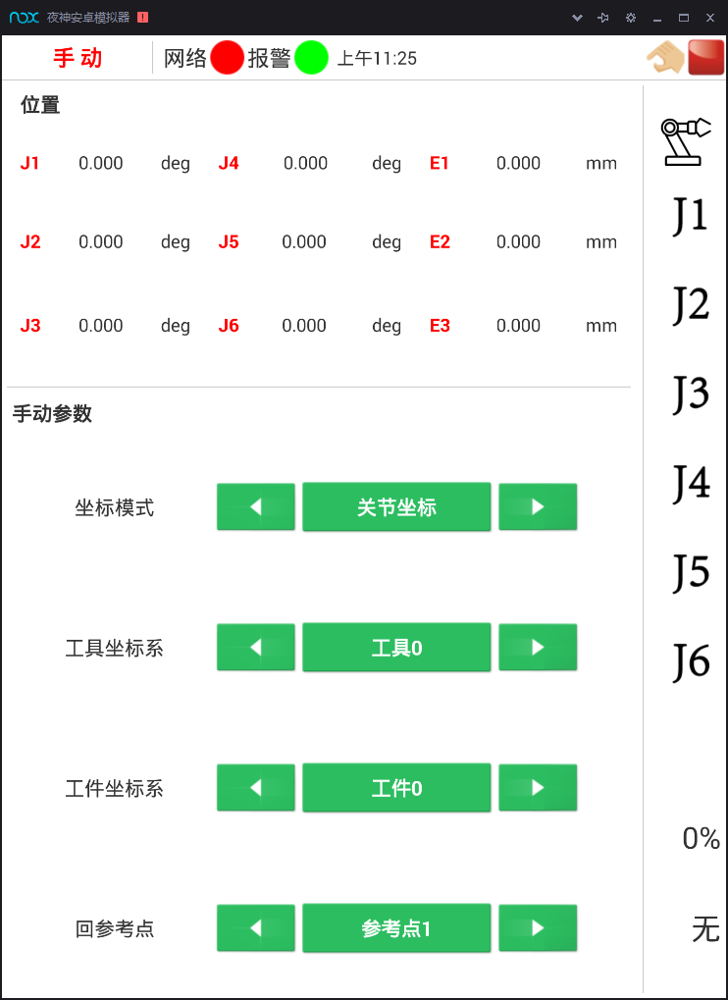
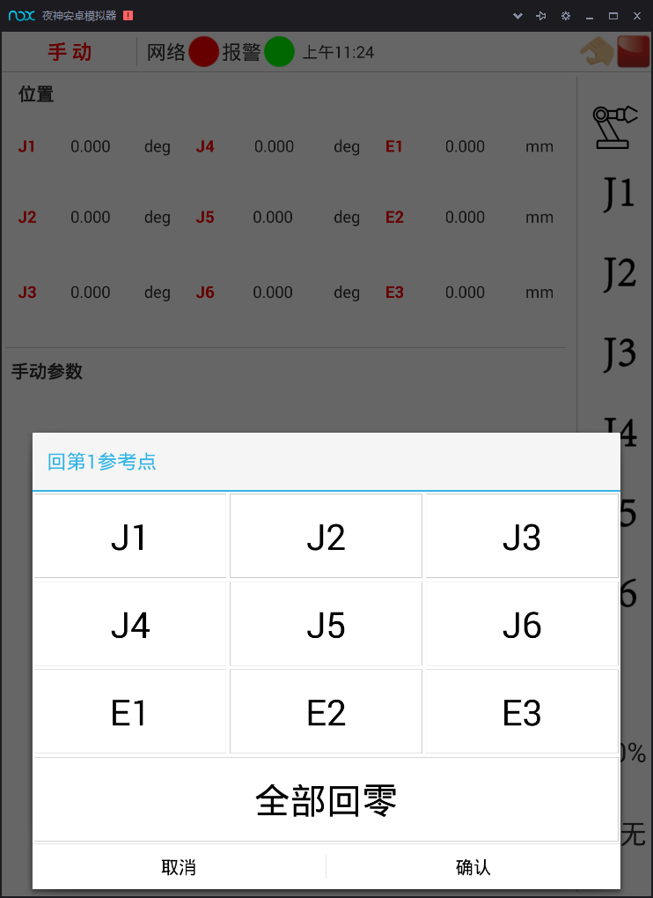

1.2手动操作工业机器人
1.2.2 手动操作工业机器人
[任务实施]
1、工业机器人启动基本操作
图1-17 HSR-612工业机器人电气控制柜面板
闭合实验室的总电源开关，然后使图1-17所示电源开关置于ON位置，电源指示灯亮系统上电，示教器操作面板上的PWR指示 灯亮， RUN指示灯亮，然后释放图中的急停开关和示教器操作面板上的急停开关按钮（按急停开关上的箭头指示方向右旋）。
2、单轴移动的手动操作
选择如图1-15所示的“手动运行”界面，点击修调值的 “ +”或“ -”调整修值大小 ”调整修值大小 ，修调值依次为VFINE、FINE 、 1、2、3、4、5、10 、20 、30 、40 、50 、60 、70 、80 、90 、100 。其中 VFINE 是增量模式，且步长为 1，FINE也是增量模式，且步长为10 。 其他值均为连续模式。
连续模式下，点击“J1+”或“J1-”等按钮会使相应的轴移动，长按“J1+”或“J1-”等按钮时，相应的轴会一直移动（当轴移动时，界面上显示的相应坐标值也会随之改变）。
增量模式下，点击“J1+”或“J1-”等按钮会使相应的轴移动指定的步长，不论按下的时间长短。
3、工业机器人参考点设定
首先，在手动模式下控制机器人各关节轴移动至标准零点姿态；然后，在下图1-18所示的校准界面中输入各关节轴的零点值（如从轴1到轴6分别为0,90,0,0，-90,0或者0,90,90,0，-90,0）；最后，按下确认键，完成校准。对单轴进行校准，点击“校准”，可调整机器人各轴的运动误差。选中需要校准的轴，输入校准值，即可校准该轴。
（注：校准操作完成后，系统可能提示“重启后生效”，请重启控制系统。）

图1-18 校准界面
4、工业机器人回参考点操作
手动运行界面下点击“回参考点”在如图1-19所示。然后点击 “全部回零”，如图1-20所示。

图1-19 回参考点（1）

图1-20 回参考点（2）